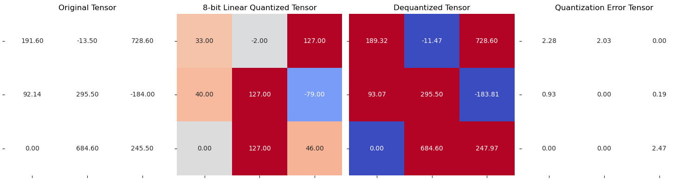
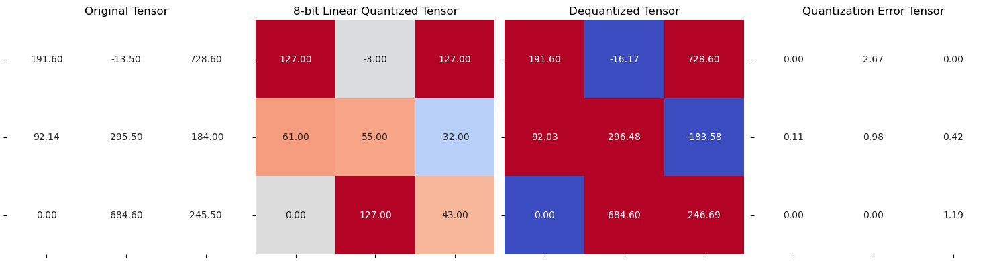

import torch
import seaborn as sns
import matplotlib.pyplot as plt
from matplotlib.colors import ListedColormap
import torch
def quantization_error(tensor, dequantized_tensor):
return (dequantized_tensor - tensor).abs().square().mean()
def linear_q_with_scale_and_zero_point(r_tensor, scale, zero_point, dtype=torch.int8):
"""
Performs simple linear quantization given
the scale and zero-point.
"""
# scale tensor and add the zero point
scaled_and_shifted_tensor = r_tensor / scale + zero_point
# round the tensor
rounded_tensor = torch.round(scaled_and_shifted_tensor)
# we need to clamp to the min/max value of the specified dtype
q_min, q_max = torch.iinfo(dtype).min, torch.iinfo(dtype).max
q_tensor = rounded_tensor.clamp(q_min, q_max).to(dtype)
return q_tensor
def linear_dequantization(quantized_tensor, scale, zero_point):
"""
Linear de-quantization
"""
dequantized_tensor = scale * (quantized_tensor.float() - zero_point)
return dequantized_tensor
def plot_matrix(tensor, ax, title, vmin=0, vmax=1, cmap=None):
"""
Plot a heatmap of tensors using seaborn
"""
sns.heatmap(tensor.cpu().numpy(), ax=ax, vmin=vmin, vmax=vmax, cmap=cmap, annot=True, fmt=".2f", cbar=False)
ax.set_title(title)
ax.set_yticklabels([])
ax.set_xticklabels([])
def plot_quantization_errors(original_tensor, quantized_tensor, dequantized_tensor, dtype=torch.int8, n_bits=8):
"""
A method that plots 4 matrices, the original tensor, the quantized tensor
the de-quantized tensor and the error tensor.
"""
# Get a figure of 4 plots
fig, axes = plt.subplots(1, 4, figsize=(15, 4))
# Plot the first matrix
plot_matrix(original_tensor, axes[0], "Original Tensor", cmap=ListedColormap(["white"]))
# Get the quantization range and plot the quantized tensor
q_min, q_max = torch.iinfo(dtype).min, torch.iinfo(dtype).max
plot_matrix(
quantized_tensor, axes[1], f"{n_bits}-bit Linear Quantized Tensor", vmin=q_min, vmax=q_max, cmap="coolwarm"
)
# Plot the de-quantized tensors
plot_matrix(dequantized_tensor, axes[2], "Dequantized Tensor", cmap="coolwarm")
# Get the quantization errors
q_error_tensor = abs(original_tensor - dequantized_tensor)
plot_matrix(q_error_tensor, axes[3], "Quantization Error Tensor", cmap=ListedColormap(["white"]))
fig.tight_layout()
plt.show()
def get_q_scale_and_zero_point(r_tensor, dtype=torch.int8):
"""
Get quantization parameters (scale, zero point)
for a floating point tensor
"""
q_min, q_max = torch.iinfo(dtype).min, torch.iinfo(dtype).max
r_min, r_max = r_tensor.min().item(), r_tensor.max().item()
scale = (r_max - r_min) / (q_max - q_min)
zero_point = q_min - (r_min / scale)
# clip the zero_point to fall in [quantized_min, quantized_max]
if zero_point < q_min or zero_point > q_max:
zero_point = q_min
else:
# round and cast to int
zero_point = int(round(zero_point))
return scale, zero_point
############# From the previous lesson(s) of "Linear Quantization II"
def get_q_scale_symmetric(tensor, dtype=torch.int8):
r_max = tensor.abs().max().item()
q_max = torch.iinfo(dtype).max
# return the scale
return r_max / q_max
###################################L3-C - Linear Quantization II: Per Channel Quantization
In this lesson, you will continue to learn about different granularities of performing linear quantization. You will cover per channel in this notebook.
Different Granularities for Quantization
- For simplicity, you’ll perform these using Symmetric mode.
Per Channel
- Implement
Per ChannelSymmetric Quantization dimparameter decides if it needs to be along the rows or columns
def linear_q_symmetric_per_channel(tensor, dim, dtype=torch.int8):
# 1 - dim means "the other dimension"
rs_max = tensor.abs().max(dim=1 - dim, keepdim=True).values
q_max = torch.iinfo(dtype).max
# return the scale
scales = rs_max / q_max
quantized_tensor = linear_q_with_scale_and_zero_point(tensor, scale=scales, zero_point=0, dtype=dtype)
return quantized_tensor, scalesdim = 0, along the rowsdim = 1, along the columns
- Iterate through each row to calculate its
scale.
scale = torch.zeros(output_dim)
for index in range(output_dim):
sub_tensor = test_tensor.select(dim, index)
# print(sub_tensor)
scale[index] = get_q_scale_symmetric(sub_tensor)
scale = scale[:, None]
# copy to be used later
copy_scale = scale
scaletensor([[5.7370],
[2.3268],
[5.3906]])tensor([[5.7370],
[2.3268],
[5.3906]])Understanding tensor by tensor division using view function
s = torch.tensor([1, 5, 10])
print(s)
print(s.shape)
print(s.view(1, 3).shape)
# alternate way
print(s.view(1, -1).shape)
print(s.view(-1, 1).shape)tensor([ 1, 5, 10])
torch.Size([3])
torch.Size([1, 3])
torch.Size([1, 3])
torch.Size([3, 1])Along the row division
Along the column division
Coming back to quantizing the tensor
(tensor([[5.7370],
[2.3268],
[5.3906]]),
torch.Size([3, 1]))quantized_tensor = linear_q_with_scale_and_zero_point(test_tensor, scale=scale, zero_point=0)
quantized_tensortensor([[ 33, -2, 127],
[ 40, 127, -79],
[ 0, 127, 46]], dtype=torch.int8)- Now, put all this in
linear_q_symmetric_per_channelfunction defined earlier.
def linear_q_symmetric_per_channel_2(r_tensor, dim, dtype=torch.int8):
output_dim = r_tensor.shape[dim]
# store the scales
scale = torch.zeros(output_dim)
for index in range(output_dim):
sub_tensor = r_tensor.select(dim, index)
scale[index] = get_q_scale_symmetric(sub_tensor, dtype=dtype)
# reshape the scale
scale_shape = [1] * r_tensor.dim()
scale_shape[dim] = -1
scale = scale.view(scale_shape)
quantized_tensor = linear_q_with_scale_and_zero_point(r_tensor, scale=scale, zero_point=0, dtype=dtype)
return quantized_tensor, scale### along the rows (dim = 0)
quantized_tensor_0, scale_0 = linear_q_symmetric_per_channel_2(test_tensor, dim=0)
quantized_tensor_0_2, scale_0_2 = linear_q_symmetric_per_channel(test_tensor, dim=0)
assert torch.allclose(quantized_tensor_0, quantized_tensor_0_2)
assert torch.allclose(scale_0, scale_0_2)
### along the columns (dim = 1)
quantized_tensor_1, scale_1 = linear_q_symmetric_per_channel_2(test_tensor, dim=1)
quantized_tensor_1_2, scale_1_2 = linear_q_symmetric_per_channel(test_tensor, dim=1)
assert torch.allclose(quantized_tensor_1, quantized_tensor_1_2)
assert torch.allclose(scale_1, scale_1_2)test_tensor_large = torch.randn(1000, 1000)
### along the rows (dim = 0)
%timeit linear_q_symmetric_per_channel_2(test_tensor_large, dim=0)
%timeit linear_q_symmetric_per_channel(test_tensor_large, dim=0)
### along the columns (dim = 1)
%timeit linear_q_symmetric_per_channel_2(test_tensor_large, dim=1)
%timeit linear_q_symmetric_per_channel(test_tensor_large, dim=1)5.96 ms ± 101 µs per loop (mean ± std. dev. of 7 runs, 100 loops each)
1.32 ms ± 58.6 µs per loop (mean ± std. dev. of 7 runs, 1,000 loops each)
6.29 ms ± 19.8 µs per loop (mean ± std. dev. of 7 runs, 100 loops each)
1.4 ms ± 74.7 µs per loop (mean ± std. dev. of 7 runs, 1,000 loops each)- Plot the quantization error for along the rows.
dequantized_tensor_0 = linear_dequantization(quantized_tensor_0, scale_0, 0)
plot_quantization_errors(test_tensor, quantized_tensor_0, dequantized_tensor_0)
Quantization Error: 1.8084441423416138- Plot the quantization error for along the columns.
dequantized_tensor_1 = linear_dequantization(quantized_tensor_1, scale_1, 0)
plot_quantization_errors(test_tensor, quantized_tensor_1, dequantized_tensor_1, n_bits=8)
print(f"Quantization Error: {quantization_error(test_tensor, dequantized_tensor_1)}")
Quantization Error: 1.0781488418579102